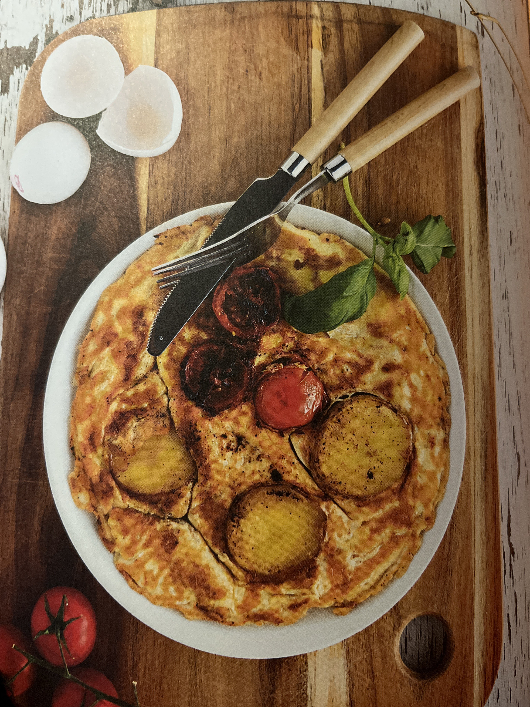

- 1-2 Kokta Potatisar
- 4-5 Små Tomater
- 2 Ägg
- Mjölk
- Salt
- Svartpeppar
- Olja
Du behöver:
Spansk Tortilla
(1 portioner)
1. Skär potatisen i skivor och tomaterna i hälften
2. Stek potatisskivorna tillsammans med några halverade småtomater tills de har mjuknat
3. Vispa äggen med en skvätt mjölk i en bunke
4. Salta och peppra
5. Häll över äggblandningen när tomaterna fått färg
6. Stek tills äggstanningen blir fast, vänd sedan och stek på andra sidan
Källa: Studentköket - Budget (s.37)